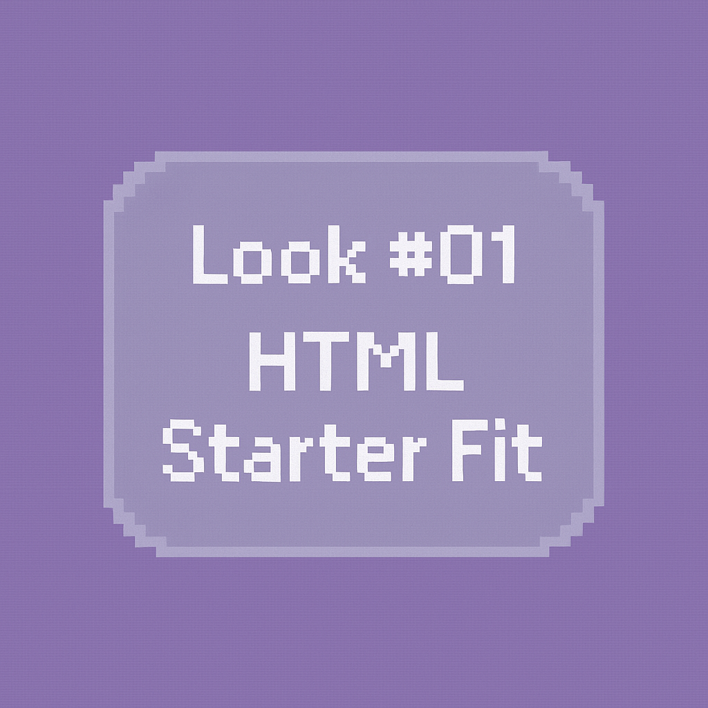

This project explores my first experiments with HTML and CSS. I created a small introduction page styled with soft pink tones, playful fonts, and a layout that reflects my personal aesthetic. The focus here was creative expression and visual identity.

I recreated the page using accessibility guidelines: higher contrast, readable font sizing,
clear spacing, and semantic HTML structure including section, h1,
h2, and p tags.
This version prioritises clarity and usability, demonstrating how small design decisions can significantly affect user experience.
For this project, I set up my development environment using VS Code and began organising my files and assets consistently. Creating two contrasting versions of the same page helped me understand how structure, spacing, and contrast influence readability.
This piece helped me realise that accessibility is not a limitation but an enhancement. It also gave me confidence in using semantic HTML and clean file organisation, which forms the foundation for more complex interactive projects later on.